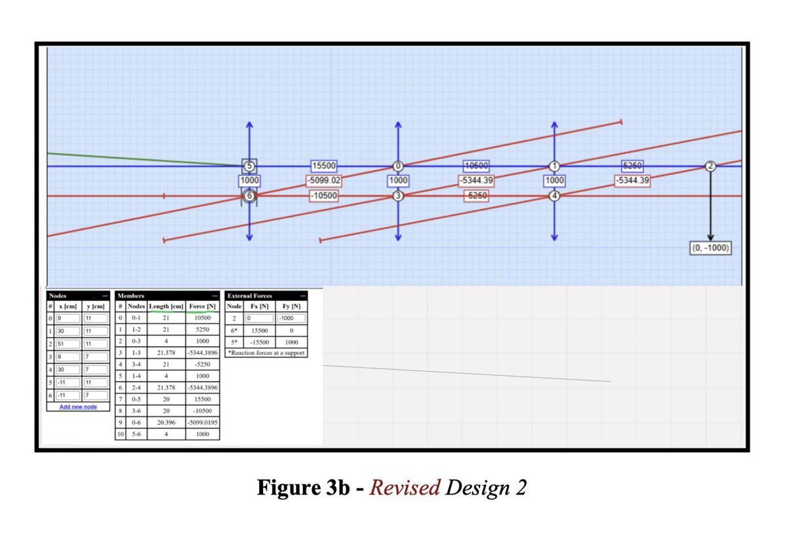
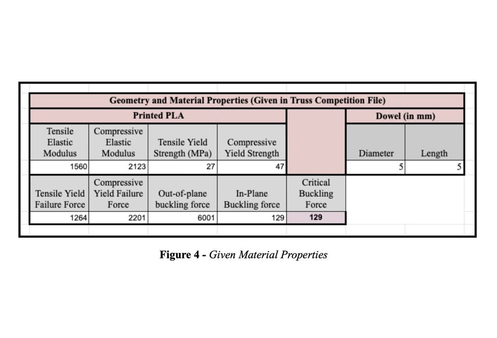
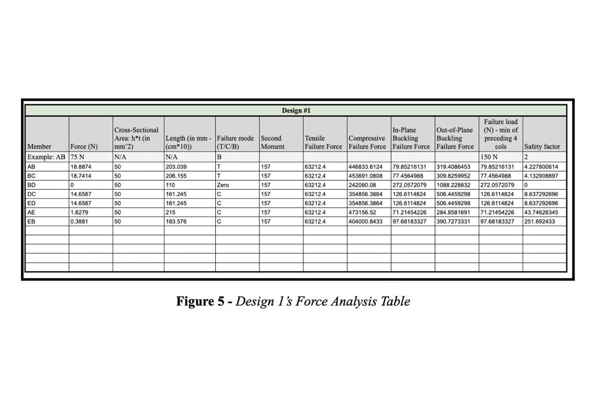
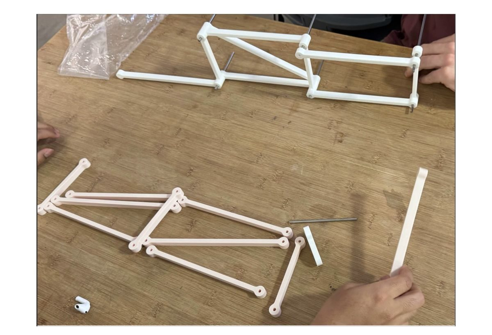
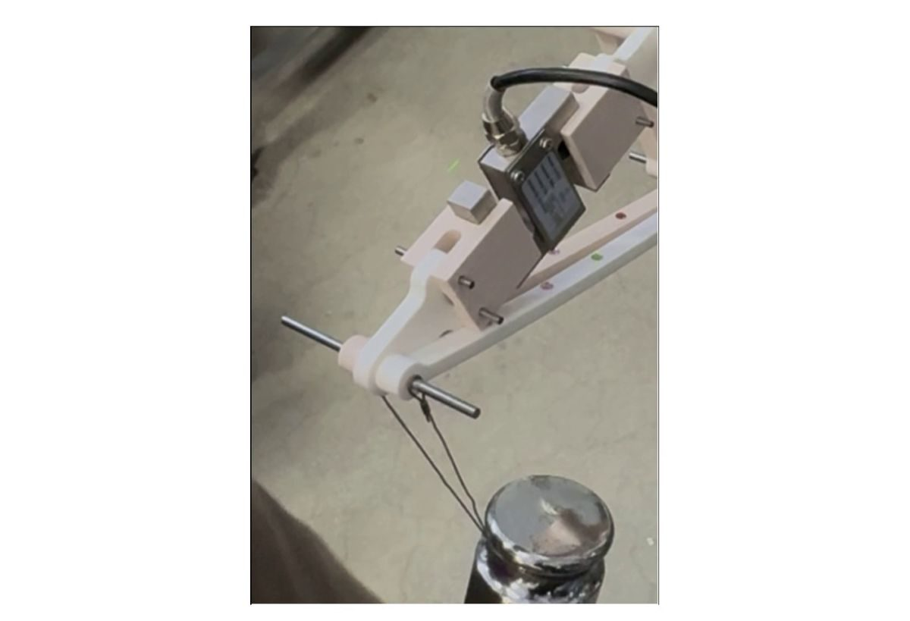
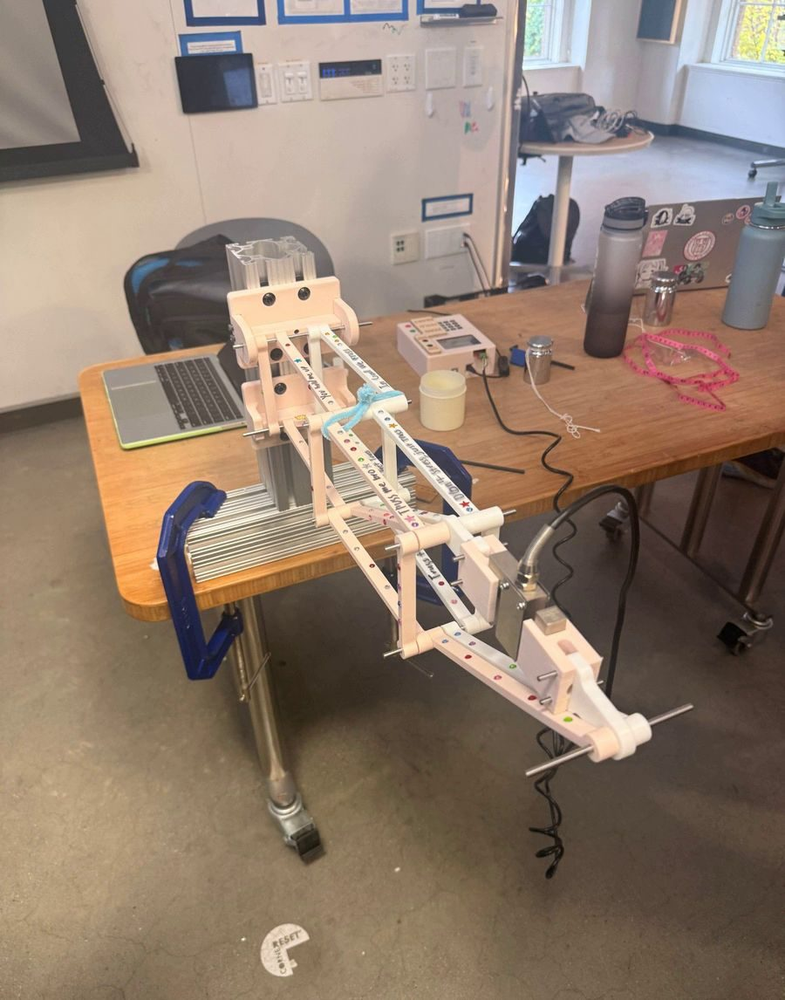
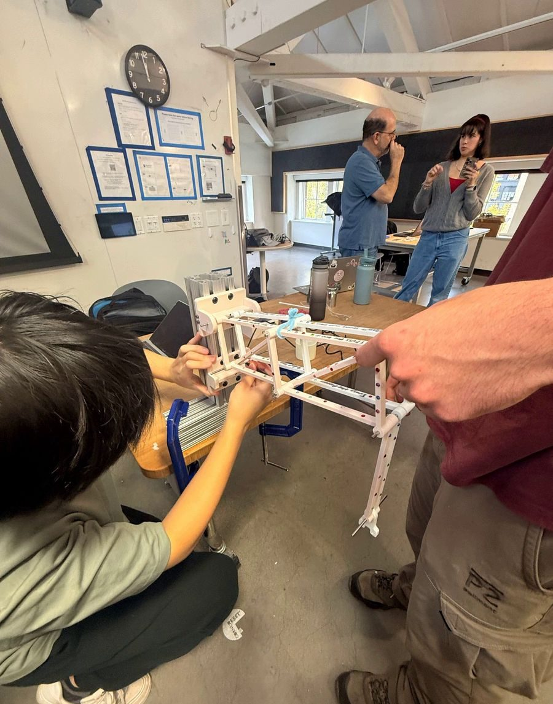

A 3D-printed cantilever truss whose predicted member force landed within 2% of the measured value.

We designed, built and load-tested a cantilever truss, predicting the force in one member and measuring it with a load cell. Our predictions landed within 2% of the measured forces.
Both modeled in the JHU Truss Simulator.
Member by member, tension to buckling.
PLA members with steel pins, within 1–2 mm.
1, 2 and 3 kg, with a load cell as one member.
Design, build and test a cantilever truss that supports 1 kg and 2 kg loads, then predict the force in one member and measure it with a load cell.
Goal: under 10% error between prediction and reality.
Two designs in the simulator, a failure analysis to pick one, then a build and load test.




Developed two concepts in the JHU Truss Simulator. Design 2 spread forces more evenly across repeating triangular bays.

Ran member-by-member failure analysis (tension, compression, in-plane and out-of-plane buckling) with the given PLA properties.


Assembled printed PLA members with steel pins, within 1–2 mm of design. Mounted to the wall fixture with member CD replaced by a load cell, loaded at 1, 2 and 3 kg.
A repeating triangular-bay cantilever, slightly heavier than it needed to be but reliable, with truss puns on the top members.
- Predictions within 2% of measured forces
- Held 3 kg with no deformation
- Thin members with safety factors well above 2
- Shorten long compression members with an extra diagonal
- Add triangulation near the load
- Taper toward the free end (not allowed this time)
This project made buckling feel real. Seeing how sensitive long compression members are to height and thickness is what pushed us to Design 2. Next time I would push for a lighter design that still holds the line.
Minerva is curious about almost everything, and patient enough to learn it.